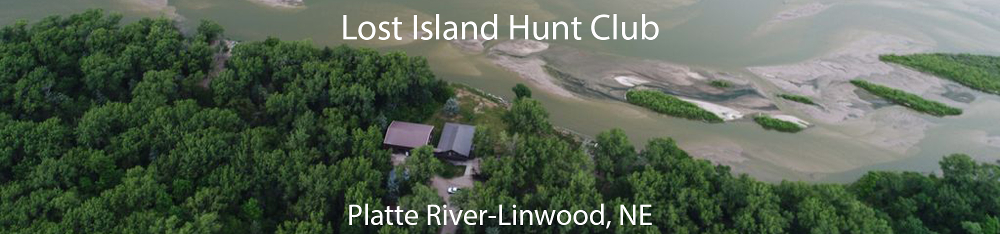

Lost Island Hunt Club has been a family owned and operated hunting club since 1981. The Club, cabin, and bunkhouse are located on an island on the South bank of the Platte River in Eastern Ne., about an hour drive from Omaha or Lincoln. Our home in Butler County puts us in the NW corner of the famous and important rainwater basin area, as well as a short flight upstream from one of the largest refuges in the Central flyway, the Platte River Refuge. Our comfortable Lodge and bunkhouse are not only the perfect place to base your hunt in the Fall, but ideal for family gatherings in the warmer months.
Our location provides us with world class Duck and Goose hunting and many other birding, outdoor activities and opportunities. We primarily hunt waterfowl, but on a limited basis, offer trophy Whitetail Deer and Wild Turkey hunts. Waterfowl hunting is done from portable and floating blinds on islands and sand bars in the Platte River, as well as permanent and pit blinds on our adjacent wetlands and Sloughs. For 2 generations and over 40 years we have taken pride in providing safe, memorable, and successful outings for our guests, regardless of age or experience. We offer fully guided hunts with lodging and meals as well as self guided hunts for the avid hunter. The rustic cabin and attached bunk house are perfect for small or large groups to enjoy a fire, meal, and some conversation before or after your hunt. Join us for the “celebration of the Fall migration” and immerse yourself in the historic Platte River flyway at Lost Island, one of Nebraska’s premiere waterfowling destinations.
"Can't wait to go back
We have hunted and stayed there several times and the accommadations and the owners at Lost Island are first rate. The experience here is unique to any other and is Nebraska at its finest."